We are the leaders in aesthetic treatments for everybody, no matter the beauty goal. Our experienced team is dedicated to offering affordable, accessible, and tailored aesthetic treatments
Royal
Service
Lazer Hair Removal
Our center has adopted the gentle lazepro laser hair removal device from the American company Candela, the type of Alexandrite laser, which is the most powerful laser in the world to remove hair and get rid of it completely, in addition to that the device contains a very high DDC cooling method, which makes it safe on the skin.
Shaping Body
In addition to slimming and sculpting the body The VelaShape device for cellulite and sagging is used in any part of the body, such as the face, neck, arms, thighs, abdomen, waist, buttocks, and any other place that suffers from the above-mentioned defects and can be exposed to the device safely.
chemical peeling
It is a technique in which chemicals are used to obtain a deep cleaning of the skin, which results in the removal of dead skin cells and the penetration of chemicals into the pores; For a dazzling result and pure skin immediately after completion.
Lightening sensitive areas, elbows and knees
The bleaching process is a safe and effective method that aims to fix any discoloration problems in your skin areas. our treatment can purify the skin and provide a whitening effect instantly.
freshness and skin lightening Mesotherapy
Mesotherapy can instantly improve dull, tired looking skin and superficial wrinkles but can also help to improve sluggish blood circulation, aiding the body to flush out ageing toxins. This treatment can also be used to address hyperpigmentation, treat acne and ‘lit-from-within’ skin glow.
birthmarks and moles treatment
While you can leave most birthmarks alone, it’s important to see a dermatologist soon after you notice a birthmark. Some birthmarks can cause a problem later on. Treatment can prevent that.
PRP stem cell injections for hair and skin
PRP can be injected into the skin, below the skin and into the scalp. This can stimulate new tissue production, such as collagen – a key protein found our skin, and soft tissue. PRP can activate our own stem cells to become more active. PRP can also stimulate our hair follicles.
Fractional Radio-frequency
is a new treatment that can reduce the appearance of acne scars and sun spots, prevent lines and wrinkles, balance skin pigmentation, and generally improve the appearance and vitality of your skin. It increases the elasticity of the skin and helps it produce youthful-plumping collagen, it also helps reduce pores.
Dermapen
Dermapen is usually used to treat the face and common skin problems, including: G etting rid of the effects of aging on the skin, Skin cell renewal, Skin texture improvement, Remove pigmentation and dark spots, Reducing large pores.
Skin Cleaning
Skin cleaning department Therapeutic, deep, crystal therapy and diamond care. Skin cleansing aims to remove impurities so that our skin can breathe during sleep and recover its natural balance.
Hair Mesotherapy
Hair Mesotherapy is a treatment method applied by injecting the vitamins, minerals and amino acid mixtures required for the hair into the scalp. With this method, hair loss can be treated, as it thickens thinned hair, stops hair loss, and makes the hair stronger and shinier.
Body Mesotherapy
Body mesotherapy is a technique, especially effective in the treatment of cellulite and local thickness. With body mesotherapy, lipolysis occurs, since the substances that are placed under the skin in an injectable way, have fat-dissolving properties, offer firmness and a more youthful appearance to the skin.
Under-eye Mesotherapy
This treatment for underneath the eyes takes around thirty minutes and involves injecting small quantities of the tailored cocktail into the desired area. Choose Mesotherapy for under Eye Protocol to bring brighter under-eyes area and reduce wrinkles. You will look and feel refreshed and feel younger.
Common Question
When will the results of the dermapen appear?
The initial results of skin tightening and pore narrowing can be seen immediately from the beginning of the sessions because once the needles penetrate the deepest layers of the skin, this leads to micro-wounds that stimulate the healing process of wounds in the skin, but the final results of the treatment of wrinkles and lines for anti-aging need a period of 4 to 6 Weeks during which the body secretes new collagen.
What are the advantages of the VelaShape device?
It offers effective results with an easy and simple process unlike all other surgical options. You can get quick results in a short time after a few sessions, but you will notice the difference from the first session.can be used anywhere in the body without any problems. Its results last for a long time compared to other non-surgical methods. It has almost no side effects and you will not experience any swelling, pain or bruising.
How often should you exfoliate?
While there’s no hard and fast rule on how frequently you need to exfoliate — as it depends on the exfoliant, how powerful it is, and what else you’re using — you definitely need to do it, says Dr. Deanne Robinson, a dermatologist at Modern Dermatology of Connecticut in Westport, CT. “As a general rule of thumb, I would advise one to two times per week.
How does the Gentle Max work?
GentleMax Pro laser targets hair follicles at the root, delivering moderate energy and therapeutic heat for permanent hair reduction over the course of a few sessions and in additional sessions it works super fast. Gentle Hair Removal ensures extra comfort with its Dynamic Cooling TM that uses cooling bursts of coolers, one of the most amazing laser hair removal devices available today.
How does the Fractional Radio-frequency device work?
The RF technology depends on the use of tiny gold needles that penetrate into the skin at different depths, ranging from 0.5 mm to 3.5 mm, depending on the case. These needles emit radio frequency waves in the lower layers of the skin, and then generate enough heat to cause immediate contraction. In the muscle membrane, which causes reducing the gaps between the pores and thus filling the cavities of the skin and thus hiding wrinkles and scars.
How many sessions of GentleMax Pro laser treatment will I need?
Multiple treatment sessions are required to achieve the full hair removal effect. That's because hair grows in three phases: Anagen (growth phase), Catagen (Transitional phase) , Telogen (elimination phase) The hair on your body isn't always in the same phase, so you'll need to go through a few sessions, six weeks apart, to catch them all in the growing phase.